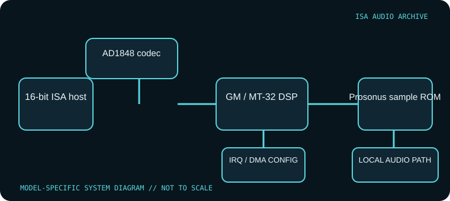

[ INDIVIDUAL COMPONENT // SOUND HARDWARE ]
Orchid SoundWave 32
The Orchid SoundWave 32 is a 16-bit ISA sound card combining an AD1848 codec with Orchid’s sample-based wavetable system and DSP firmware. This record describes the original SoundWave 32; the 32 Pro, SCSI and Studio versions differ in ROM, expansion and bundled hardware.

Model-specific specifications
| Catalog identity | Orchid SoundWave 32 standard model. Identify PCB, ROM and interface options; do not silently fold SoundWave 32 Pro or SCSI revisions into this record. |
|---|---|
| Bus / host | 16-bit ISA PC-compatible host. Original documentation and drivers target DOS and Windows 3.x/early Windows environments. |
| Sound engine / I/O | Analog Devices AD1848 codec provides Windows Sound System audio; onboard wavetable/sample ROM supports General MIDI and Roland MT-32-compatible firmware modes, with Ad Lib/Sound Blaster and MPU-401 standards listed in archival references. Standard ROM capacity is 512 KB or 1 MB by build. |
| IRQ | Configured for the codec/driver, not a single universal card default. Use Orchid setup instructions and record the installed interrupt line and driver profile. |
| DMA | The standard card’s J4 jumper selects DMA channel 1, 2 or 3. The DOS Days reference lists J3 base I/O 220h (default) or 240h and a separate ROM-size jumper. Verify the IRQ selected by the installed codec driver and do not assume the settings of GameWave or SCSI variants. |
| Software / host compatibility | Orchid DOS/Windows 3.x driver set includes alternate DSP firmware for GM versus MT-32 mode. Programs require matching MIDI/audio device configuration; newer OS support is not asserted. |
| Connections / options | Standard and SCSI variants differ in Sony/Mitsumi CD-ROM interfaces, SCSI and wavetable header presence. Check the installed ROM and connectors; the 32+Studio is a separate enhanced configuration. |
Compatibility & configuration notes
SoundWave 32 was not a single immutable specification across its sales life. The archive notes identify the AD1848-based Windows Sound System path, onboard Prosonus samples and separate SoundWave 32 Pro/SCSI/Studio products. The software’s alternate DSP firmware means preservation includes the correct driver image and selected synthesis mode, not only the ROM chips. Record the exact label, sample ROM markings, CD-ROM interface headers and driver version.
- Photograph model/revision markings, resource switches or jumpers, connector panel and installed options before installation.
- For every configured IRQ, DMA channel, I/O address and driver, record the actual setting used by the host; do not rely on a family name or an assumed default.
- Power down and unplug the host before fitting or removing an ISA card; retain period setup tools and documentation with the specimen.
Sources & archival documentation
- DOS Days — Orchid SoundWave 32Model history, AD1848 codec, sample ROM and variant distinctions.
- Internet Archive — Orchid SoundWave 32 Series softwareArchived Orchid driver/software package relevant to the card’s period configuration.
Where related model variants exist, the original manual and the physical card’s complete part/revision marking take precedence over generalized family summaries.